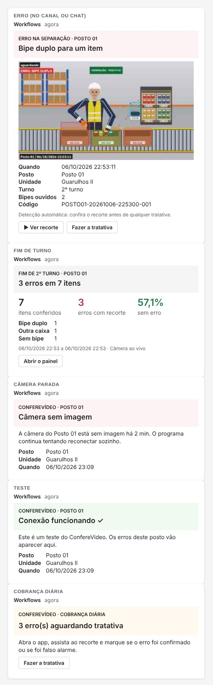
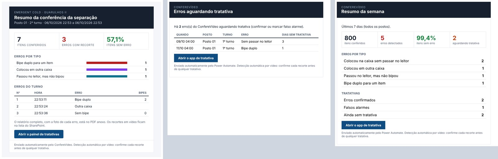
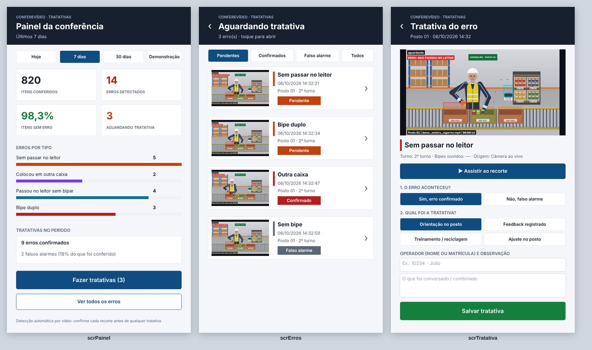

1O que acontece depois de ligado
A cada erro
Vira um item na lista do SharePoint, com foto, recorte em vídeo e status "Pendente". Chega um cartão no Teams com a foto e o botão "Ver recorte".
No fim de cada turno
O programa fecha o relatório, gera o PDF e o gestor recebe por e-mail os indicadores do turno. O turno vira uma linha na lista de turnos.
Todo dia às 07:00
Os supervisores recebem no Teams e por e-mail os erros que ainda não tiveram tratativa.
Toda segunda às 07:30
O gestor recebe o resumo da semana: itens conferidos, erros por tipo, confirmados, falsos alarmes e pendentes.
Se a câmera parar
Depois de 2 minutos sem imagem, chega um alerta no Teams e por e-mail. Quando ela volta, outro aviso. O programa tenta reconectar sozinho.
Tratativa no celular
O supervisor abre o app, vê a foto, assiste ao recorte e marca "erro confirmado" ou "falso alarme", com a orientação dada e o operador.

2Antes de começar
- Conta do Microsoft 365 da empresa com Teams, SharePoint, Outlook, Power Automate e Power Apps. Os planos comuns do Microsoft 365 já incluem tudo o que o ConfereVídeo usa: só conectores padrão (SharePoint, Teams e Outlook), sem licença Premium.
- Um site do SharePoint onde você possa criar listas. O mais prático é o site da equipe do Teams de SST (toda equipe do Teams tem um).
- O PC da câmera com internet, para o programa mandar os envios. Se a internet cair, nada se perde: os envios ficam na fila e saem quando ela voltar.
- Uns 40 minutos. Se a TI controla o Power Platform da empresa, mostre este guia a ela: tudo fica dentro do Microsoft 365 da empresa.
- O PC verificado. No fim da instalação o ConfereVídeo verifica o PC sozinho e abre o resultado (
diagnostico.txt). Depois de ligar o envio, rode de novo (VERIFICAR_PC.batou Configurações > Verificar este PC): ele testa se o PC alcança o Power Automate.
https://empresa.sharepoint.com/sites/SST-Guarulhos (sem o resto).3Preencher o ConfereVídeo e gerar os fluxos
- No ConfereVídeo, abra a tela Microsoft 365.
- Preencha Site do SharePoint, E-mails dos supervisores e E-mails do gestor (vários e-mails: separe por vírgula). Deixe os nomes das listas como estão.
- A Chave de segurança já vem criada. Ela garante que o fluxo só aceite envios deste programa.
- Clique em Salvar e depois em Gerar fluxos do Power Automate…. Escolha uma pasta. Saem 4 arquivos
.zipjá preenchidos com o seu site e os e-mails, e umLEIA-ME.txt.
4Importar os fluxos no Power Automate
- Entre em make.powerautomate.com com a conta da empresa.
- No menu da esquerda: Meus fluxos > Importar > Importar pacote (Herdado).
- Carregar > escolha
1_Criar_listas.zip. - Em Recursos relacionados, clique em cada conexão (SharePoint e, nos outros fluxos, Teams e Outlook) e escolha a sua conta. Se não houver nenhuma, clique em Criar nova e entre com a conta da empresa.
- Clique em Importar. Repita com
2_Receber_eventos.zip,3_Cobranca_diaria.zipe4_Resumo_semanal.zip.
5Criar as listas no SharePoint
- Em Meus fluxos, abra ConfereVídeo · 1 Criar listas. Se ele estiver desligado, clique em Ligar. Depois, Executar > Executar fluxo.
- Em cerca de 1 minuto aparecem no site as listas
ConfereVideo_ErroseConfereVideo_Turnos, com todas as colunas e índices. - Se rodar de novo, ele avisa que as listas já existem: é normal, não estraga nada.
6Ligar o fluxo que recebe os erros
O fluxo ConfereVídeo · 2 Receber eventos vem com o gatilho Quando uma solicitação HTTP é recebida. Esse gatilho é Premium. A maioria das empresas não tem; nesse caso, troque o gatilho pelo do Teams, que é padrão. O resto do fluxo continua igual.
Sem licença Premium (o mais comum)
- Abra o fluxo 2 e clique em Editar.
- Clique no gatilho do topo > … > Excluir.
- Adicionar um gatilho > procure Microsoft Teams > Quando uma solicitação de webhook do Teams é recebida padrão.
- Em Quem pode disparar o fluxo, escolha Qualquer pessoa. A chave de segurança do programa é o que protege o fluxo.
- Salvar. Clique de novo no gatilho e copie a URL que apareceu.
Com licença Premium
Não troque o gatilho: abra o fluxo, clique no gatilho, confira se Quem pode disparar o fluxo está em Qualquer pessoa, salve, ligue o fluxo e copie a URL de HTTP POST.
Colar no ConfereVídeo
- Na tela Microsoft 365, cole a URL em Endereço do fluxo (URL), marque Enviar para o Microsoft 365 e escolha Completo.
- Clique em Testar envio. Em segundos chega no Teams o cartão "Conexão funcionando ✓".
7Ligar a cobrança diária e o resumo semanal
Abra ConfereVídeo · 3 Cobrança diária e ConfereVídeo · 4 Resumo semanal e clique em Ligar. Para ver como fica sem esperar, use Testar > Manualmente.

8Montar o app de tratativa (Power Apps)
As três telas do app já estão prontas em texto, na pasta Microsoft365\PowerApps. Você só cria um app em branco, liga as listas e cola as telas.

- Entre em make.powerapps.com > Criar > Aplicativo de tela em branco. Nome:
ConfereVídeo Tratativas. Formato: Telefone. - No menu da esquerda, Dados > Adicionar dados > SharePoint > escolha o site > marque
ConfereVideo_ErroseConfereVideo_Turnos> Conectar. - Configurações > Geral > Limite de linhas de dados:
2000. - Descubra o separador do seu Power Apps. Clique na tela e veja a fórmula de qualquer propriedade. Se aparece
RGBA(255; 255; 255; 1)(ponto e vírgula), use a pastapt-BR. Se apareceRGBA(255, 255, 255, 1)(vírgula), use a pastaen-US. - Abra
0_todas_as_telas.yamlno Bloco de Notas, Ctrl+A e Ctrl+C. No Power Apps, no painel Modo de exibição de árvore, clique em App e cole com Ctrl+V (ou clique com o botão direito > Colar). Surgem as três telas de uma vez. - Se ele não aceitar as três juntas, cole uma de cada vez:
1_Painel.yaml,2_Erros.yamle3_Tratativa.yaml. As marcas de erro que aparecem no meio do caminho somem quando as três telas existem. Os nomes precisam ficarscrPainel,scrErrosescrTratativa, porque as fórmulas usam esses nomes. - Apague a
Screen1vazia e arrastescrPainelpara o topo da árvore. Ela é a tela de abertura. - Salvar > Publicar. Depois, Compartilhar com os supervisores. Eles também precisam de permissão de edição nas duas listas.
- Copie o link do app (Aplicativos > … > Detalhes > Link da Web) e cole no ConfereVídeo, em Link do app de tratativa. Assim os cartões e e-mails ganham o botão "Fazer a tratativa". Para os e-mails dos fluxos 3 e 4, gere os fluxos de novo e importe só o 3 e o 4 escolhendo Atualizar em vez de "Criar como novo".
scrPainel, clique nela e cole o arquivo controles_1_Painel.yaml. Faça o mesmo para scrErros e scrTratativa. Em cada tela, copie também as propriedades Fill e OnVisible que estão no começo do arquivo da tela inteira.O botão Demonstração no painel mostra ou esconde os itens que vieram da demonstração do programa.
9Automação no PC da câmera
Na tela Automação do ConfereVídeo:
| Opção | O que faz |
|---|---|
| Abrir quando o PC ligar | Cria um atalho na inicialização do Windows. O programa abre sozinho 20 s depois do login e já liga a câmera ao vivo. |
| Ligar a câmera ao abrir | Mesmo comportamento quando alguém abre o programa à mão. |
| Não deixar o PC suspender | Enquanto a câmera está ligada, o Windows não suspende nem apaga a tela. |
| Horários de troca de turno | Ex.: 06:00, 14:20, 22:35. Em cada horário o programa fecha o relatório (HTML + PDF), manda o resumo e começa o próximo turno sozinho. |
| Avisar câmera sem imagem | Alerta no Teams e por e-mail depois de N minutos sem imagem, e outro quando ela volta. |
| Guardar recortes por N dias | Apaga sozinho as sessões mais antigas (padrão: 90 dias). Os itens no SharePoint seguem a regra de retenção da empresa. |
10Teste completo (5 minutos)
- Na tela Microsoft 365, marque Enviar também a demonstração e salve.
- Em Câmera ao vivo, clique em ▶ Ver demonstração e deixe o vídeo rodar até o fim (1 minuto).
- Confira: chegam 4 cartões de erro no Teams; a lista
ConfereVideo_Errosganha 4 itens com foto e recorte; no fim chega o cartão do turno e o e-mail do gestor com o PDF. - No app, ligue Demonstração, abra um erro, assista ao recorte e salve uma tratativa.
- Depois, desmarque "Enviar também a demonstração". Se quiser, apague os itens de demonstração das listas.
11Quando algo não sai certo
| O que aparece | O que fazer |
|---|---|
| "o fluxo pede login (401)" | No gatilho do fluxo 2, em Quem pode disparar o fluxo, escolha Qualquer pessoa e salve. |
| "endereço do fluxo não encontrado (404)" | A URL mudou (por exemplo, depois de trocar o gatilho). Copie de novo do gatilho e cole no programa. |
| Fila crescendo, "sem conexão" | O PC está sem internet, ou o proxy da empresa bloqueia *.powerplatform.com / *.logic.azure.com. Fale com a TI. Os envios ficam guardados. |
| Teste chega, mas os erros não viram itens da lista | Em Meus fluxos > fluxo 2 > Histórico de execuções, abra a execução marcada como Falha e veja a etapa em vermelho. O alerta no Teams sai mesmo assim. Quase sempre é o fluxo 1 que não rodou (listas não existem) ou falta permissão no site. |
| Execução "Cancelada" no fluxo 2 | A chave do programa é diferente da do fluxo (alguém gerou chave nova). Copie a chave na tela Microsoft 365 (botão Copiar), edite o fluxo 2, abra a condição Conferir_chave e cole a chave no lugar da antiga. Não reimporte o fluxo 2 por cima: isso traria de volta o gatilho Premium e mudaria a URL. |
| Cartão chega sem a foto | Teams antigo no celular. Atualize o Teams; o botão "Ver recorte" funciona igual. |
Envios recusados (pasta fila_envio\falhou) | Corrija a causa e use Reenviar o que falhou. O registro de tudo fica em fila_envio\envios.log. |
| Power Apps marca erro nas fórmulas depois de colar | Usou a pasta errada (vírgula × ponto e vírgula). Apague as telas e cole as da outra pasta. Se aparecer erro de "Variant", troque galleryVertical por Vertical no arquivo. |
12Segurança e LGPD
- Os dados ficam no Microsoft 365 da própria empresa (SharePoint, Teams, Outlook). Nada passa por servidores de terceiros.
- O fluxo só aceita envios com a chave de segurança do programa. Quem não tem a chave tem a execução cancelada.
- O sistema não faz reconhecimento facial. O operador é informado pelo supervisor na tratativa, quando necessário.
- Só os trechos com erro são gravados. O PC apaga os antigos sozinho; no SharePoint, aplique a regra de retenção da empresa.
- Toda detecção é automática e pode errar: o app pede a conferência do recorte ("confirmado" ou "falso alarme") antes de qualquer tratativa.
13Referência: colunas das listas
O fluxo 1 cria tudo sozinho. Esta tabela serve para conferência, ou para criar à mão se o fluxo 1 não puder rodar. Use exatamente estes nomes, sem acento.
| ConfereVideo_Erros | Tipo | ConfereVideo_Turnos | Tipo |
|---|---|---|---|
| Title (código do erro) | Texto | Title (código do turno) | Texto |
| TipoCodigo, Tipo, Unidade, Local, Posto, Turno, Origem, Fonte, Sessao, MomentoVideo, Tratativa, Operador, TratadoPor | Texto (uma linha) | Unidade, Local, Posto, Turno, Origem | Texto (uma linha) |
| Status (padrão: Pendente) | Texto (uma linha) | Inicio, Fim | Data e hora |
| DataHora, TratadoEm | Data e hora | Itens, Erros, ItensSemErro, SemLeitor, CaixaErrada, SemBipe, BipeDuplo | Número |
| Bipes | Número | PctSemErro | Número (1 casa) |
| Observacao, LinkRecorte, Miniatura | Várias linhas, texto simples |
A foto e o recorte de cada erro ficam como anexos do item. A coluna Miniatura guarda uma foto pequena, que o app e a lista mostram sem precisar abrir o anexo.
14Alternativas
Só alerta no Teams, sem lista (5 minutos)
- No Teams, nos … do canal > Fluxos de trabalho > modelo Postar em um canal quando uma solicitação de webhook é recebida.
- Escolha a equipe e o canal > Adicionar fluxo de trabalho > copie a URL.
- No ConfereVídeo, cole a URL e escolha Só alerta no canal do Teams. Cada erro chega no canal com a foto. Não há lista nem app nesse modo.
Montar o fluxo 2 à mão (se não puder importar)
Comece pelo modelo do item anterior, ou por um fluxo instantâneo com o gatilho Quando uma solicitação de webhook do Teams é recebida (Qualquer pessoa). Depois do gatilho, adicione:
| Ação | Como preencher |
|---|---|
Compor (nome: Dados) | triggerBody()?['conferevideo'] |
| Inicializar variável | Nome LinkRecorte, tipo Cadeia de caracteres, valor vazio. |
| Condição: evento é "erro" ou "sessao" | outputs('Dados')?['evento'] é igual a erro (ou sessao). |
Dentro do Sim: Enviar uma solicitação HTTP para o SharePoint (nome: Criar_item) | Endereço do site: outputs('Dados')?['site'] · Método POST · URI: _api/web/lists/getbytitle('@{outputs('Dados')?['lista']}')/items · Cabeçalhos: Accept e Content-Type = application/json;odata=nometadata · Corpo: string(outputs('Dados')?['item']) |
Aplicar a cada sobre outputs('Dados')?['anexos'] com Adicionar anexo (SharePoint) | Site e lista como acima · Id: body('Criar_item')?['Id'] · Nome: items('Aplicar_a_cada')?['nome'] · Conteúdo: base64ToBinary(items('Aplicar_a_cada')?['b64']) |
| Ainda dentro do Aplicar a cada: Condição + Definir variável | Se items('Aplicar_a_cada')?['nome'] termina com _recorte.mp4: LinkRecorte = body('Adicionar_anexo')?['AbsoluteUri'] |
| Publicar cartão em um chat ou canal (Teams), fora da condição | Cartão: replace(string(triggerBody()?['attachments']?[0]?['content']), 'https://conferevideo.invalid/recorte', if(empty(variables('LinkRecorte')), outputs('Dados')?['site'], variables('LinkRecorte'))) |
Enviar um email (V2), quando outputs('Dados')?['email']?['para'] não estiver vazio | Para, Assunto e Corpo: outputs('Dados')?['email']?['para'], …['assunto'] e …['html']. |
A chave fica em outputs('Dados')?['chave']. Compare com a do programa numa condição no começo e use Encerrar (Cancelado) quando for diferente.